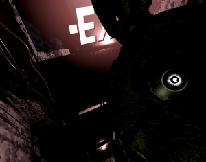
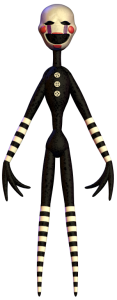
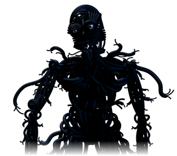

If you see any issues, please do make us aware via our Contact Form.
Thank you for browsing FNaFLore.com, we hope you enjoy the improvements that are coming to the site!
It's so painful to look at! :c

On Sister location, Ennard and the Community Reaction
[9:03] Kizzycocoa – Ok, so we should start with a summary, but first, lets just talk about how this came about quick, and a little about who you are. Care to introduce yourself?
[9:07] Momerator – Sounds good, gimme a sec to type it up.
Hihi! Yeah, it’s Momerator. For the few that don’t follow enough of the Sub politics and whatnot, that’s Fredgongiveit2ya, the last assigned official mod. I do the baking streams and FNaF fan art.
[9:12] Kizzycocoa – Yes, and it’s been some time trying to get you here! this was originally meant to be a sorta outreach to Freddit after the Basetown incident, which was a pretty big rip between the two sites. It’s been some time since, and trying to pin you down has been tough! we’ve both procrastinated, which is fairly normal, and can delay things like this. Where I must take off my hat to you, is how you then tried to purposefully avoid the talk by destroying your own organs and home, in a desperate bid to escape this discussion. how are you doing nowadays? :U
[9:14] Momerator – Well, I gave up trying to avoid you, I’d have needed to burn the house down and flee the country. Finances didn’t allow. Speaking of those, they’re much better now. I’ve moved on from teaching, I’ve made the scary jump back into supporting myself via art. Everything I do is hand drawn, takes a lot of my time, and generally irritates my kids, so there’s a plus. The Ehlers is just something I have to learn to live with.
[9:16] Kizzycocoa – Does it irritate them? We’ve seen the livestreams, and they’ve seemed pretty excited to be a part of what you’ve been doing. What would irritate them with you doing art?
[9:16] Momerator – The livestreams are one thing, but “Jack, mommy can’t right now, she’s drawing alone in her room” is quite another.
[9:18] Kizzycocoa – Ah, of course. I could see why now. Still, glad to hear you’re doing better now. Of course, we’ve known each other for a while now, and it was genuinely worrying both of those times that I’ve known you. I don’t want the jokes to make people think that I don’t take it seriously, but still, we’re all happy you’re better now. :)
[9:19] Momerator – I’ve been, both times, astounded with the sub and my online friend’s patience and kindness.
Jokes don’t bother me. I use humor as both a shield and balm.
[9:21] Kizzycocoa – Yes, which honestly has floored me too. You’ve kind of become a mom to the whole subreddit! how’s that been for you?
[9:23] Momerator – There’s a line from a song I’m currently obsessed with that sums it up really well. “And it’s a long way forward, so trust in me
I’ll give them shelter, like you’ve done for me” Everything I give I get back in spades, to the point I feel undeserving.
It’s just my nature, I can no more turn my back on someone’s pain than I could abandon my children. I’ve been alone, and reaching out in this big wide scary internet world, and I want people to know there’s someone real on the other side of that screen.
[9:27] Kizzycocoa – And on that note, I’d like to just say something about Scott quick. I’m never in a position to compliment Scott often, because I’m viewing the fractured lore itself from a very critical lens, as I probably will throughout this. I don’t so much review/explain Scott the person, as I do his work and lore. But I feel I have to say, a big kudos to him for helping you out there too. I may have my worries and issues with the game and it’s lore at times, but Scott as a person, you’d be hard-pressed to find someone more generous and kind as him.
[9:33] Momerator – I agree. I cried. I took almost a day to come to terms with what happened. For those not in the know, Scott actually paid above and beyond on a GoFundMe I’d opened to save my house. I wrote him a very personal letter, and got back a very Scott Cawthon response. One line. “You said it yourself, we’re family.” I’ve noticed that about this fandom, and talked more in depth other places about it, but it is structured like a family. To be the “Mom” of that……it’s basically not an honor or position I take lightly.
[9:36] Kizzycocoa – It does seem personal like that. I’ve been in communities similar to this one in terms of it being a family. Back in my Portal days, that home was MyApertureLabs, which got rebranded and is since abandoned. Still, I get that feeling a lot. Why do you think the community is like this?
[9:36] Momerator – Oh man, that discussion might get a little personal. I’m okay with that, if you are.
[9:37] Kizzycocoa – sure, we can deviate right off the bat. I mean, to me, I’d put it down to how decyphering the lore has almost been a collaborative community project.
[9:40] Momerator – There is that, yes. It’s what brought people together. What’s keeping them here, though, is that structure. I attribute that to something thought of as “Family of Choice”. I can only relate things to myself and my own experinces, though I do try to have empathy for others. I come from an abusive background. I do the majority of my living, my family events, with what are officially my inlaws and friends, because that is my family of choice. I think people are lost, sometimes, and trying to find where they belong. That can sometimes be in a community 20,000 strong, because we are so inclusive.
[9:42] Kizzycocoa – Oh, I could easily see that as well. I was in the Minecraft community a long while back, before it sold to Microsoft. That community was exactly the same, for me. I’ve picked up a lot of friends from that game as well.
Which also raises another point, the Youtube aspect. That probably had a big effect, particularly when the Youtubers kept going back to the game’s sequels.
[9:43] Momerator – Also, you know, funny screen grabs are funny.
[9:43] Kizzycocoa – oh absolutely. Some of the screenshots are more cute than scary. I still can’t really take Withered Chica’s pose seriously.
or, do you mean the Youtuber face-cams?
[9:44] Momerator – I was surprised, not at FNaF’s popularity, but at the particular age range of it’s fans. I got hooked by the diffiult to parse lore, but the games really feed on parental fears. I was expecting an older bent.
I’d say both.
[9:45] Kizzycocoa – I can see that, it is a very dark story for what it is. I suppose the fact it’s animal mascots, as well as the focus on kids, drags the age range down a bit.
Still, yes. The community does seem like a family at times, I can certainly agree. What they’ve done, both creator and fans, has been incredible to see from time to time.
[9:47] Momerator – I’m very surprised Scott didn’t capitalize on the parent angle more. That anguish.
[9:47] Kizzycocoa – There’s a lot of salt in the theory part of the community, but as a community, it doesn’t seem so angry.
[9:48] Momerator – We can be both. Salty and still love. Families gripe.
[9:48] Kizzycocoa – oh absolutely. I mean, I saw The Living Tombstone’s “It’s Been So Long”. That song’s deep.
It would have been interesting to see more of Scott putting that into the work
[9:48] Momerator – That video affected me more than the game, to be honest.
[9:49] Kizzycocoa – I can agree. It is stunning, from an emotional point of view.
[9:50] Momerator – I can almost see where he wouldn’t. Wouldn’t take it to so personal a place, because Scott is a father. Or he accepted it as a given. I’m not sure. I’ve been asked to voice moms for a few fangames now, and I always try to bring that sense of loss, that anguish so deep it’s primal, to it.
[9:52] Kizzycocoa – I see. We’ll need to return to that at the end, if you’d like to push any of them when we close out! But, I think the best thing to do now is to start talking lore. We’ve got a lot to talk about.
[9:52] Momerator – We do.
[9:53] Kizzycocoa – So, lets go through it. We can define 3 seperate releases here. Sister Location, the Custom Night update, and the Custom Night patch. Lets go through them one by one. What was your reaction to the base Sister Location game?
[9:56] Momerator – I wasn’t too upset with just the base game. I felt like it answered a few things, not everything, but I could fit it into my thought process where the lore was concerned. I was…confused a little. I talked them about, if that was Purple Guy scooped there at the end, I didn’t like it taking some of the weight of what he’d done from his shoulders. I’ve talked before about hating the end of the Silver Eyes, because Charlie is the reason the springlocks went off, not the villain’s hubris. Also, though, and I said this then, I could find the quote…I thought he was changing the lore. Because nothing was ever confirmed, he could pretty much do whatever he wanted.
[9:58] Kizzycocoa – I see. for me, I saw this as the end of FNaF 1-4. It seemed to tie up 1-3 perfectly, and then left itself and 4 open for a potential sequel. I do not feel FNaF will last with another sequel, but for me, 1-3 were solved. we can move on.
Then, Custom Night released.
[9:58] Momerator – Ah, Custom Night.
Cuuuuustom Night
[9:59] Kizzycocoa – I saw so many people saying they were leaving. I saw some in Fazcord calling for a revolt. some people jokingly suggested we prop up Popgoes as the one true lore.
Did you see this too, and how did you react?
[10:01] Momerator – I saw it, yes. I did the usual thing. Went through the stage of grief, so to speak. Denial, all of it. I felt bad for things I’d said about Popgoes lore, but that’s a whole different can of worms. Speaking of, I still need to apologize for spawning the Purple Minimum Wage Necromancer line.
[10:02] Kizzycocoa – I too immediately apologised for my spat with Popgoes. His was a question of motive and conflicting developer lore, but still, Custom night blew it out of the water for me. I still can’t quite accept Custom Night at face value. The part where the corpse is reanimated and somehow holds itself together long enough to be Springlocked, I can’t really accept that. Of course, I run a lore site. How can I possibly explain the physiology of that beyond “A wizard did it?”
plus, at the time, we thought it was William, which screwed over literally all of the lore
it was not a nice time, frankly.
[10:05] Momerator – You can’t. Without the metaphysical that development doesn’t work. Right. I can try and put myself back into the mindset I had then, and the…I won’t say anger, though I did do the anger stage of grief. You and I talked about it then. I mean….as someone who initially joined the community because I wanted to join theory discussions, I was left…well.
I do think he changed the story. There was just no way we could have predicted the skinsuit from what he gave us in 4.
But he said we had all the peices.
A friend of mine and I talked about it……
We’d once launched a theory that took into account things as small as 4-10 pixels. That’s how deep we’d gone.
We were WELL into the BWAAAAAAAAAAAAAAAAAAAAAAAAAAAAAAM levels of Inception
[10:07] Kizzycocoa – yeah, and Custom Night was just, a massive headache at that point
[10:08] Momerator – I had to sit back and think. Think if I really wanted to keep the games as big a part of my day to day life as they are.
[10:08] Kizzycocoa – just, the amount of changed lore
I will admit the same. it was just a rough time all around
and of course, I now have an obligation to the community to finish up the lore. I needed to
it quickly just switched the hobby to a service, and, that was not nice at the time.
[10:09] Momerator – Right. We’ve built this whole social world around these games, and I was left going “Well….they weren’t the story we thought we were following”
And may I say.
Where is the freaking Puppet? I wondered during 3 if we were seeing the start of some kind of Good vs Evil supernatural story.
Is he Ennard? That seems the going theory. I thought Scott would’ve at least explained what made him different. Why could he Give Life, so to speak, and the others couldn’t?
[10:12] Kizzycocoa – I did bring that up in my big spiel as well, after talkin to you at the time. Him, Fredbear and Golden Freddy have sorta been sidelined.
Also that would be impossible, off the bat.
Mangle was made as a response to Foxy going out of commission. For Mangle to exist, the others must already have been running, stuffed (The smell) and then put into the FNaF2 location
during which, The Puppet existed.
[10:13] Momerator – I think we’re well past anything being impossible.
[10:13] Kizzycocoa – Well, that takes us to SL:CN
what were your thoughts there?
[10:15] Momerator – ..Wow, you know, I don’t know. I’d always felt that Springtrap survived the fire, but the new angle…..man, I don’t know. If it isn’t William in the suit, if it’s Mike….were they both killers?
[10:15] Kizzycocoa – I think, if SL/CN pre-patch didn’t tell you he modified the lore, the patch did.
That is also an excellent question, too
because this brings up the 2 killer theory.
the one that was totally dead and impossible and stupid.
[10:16] Momerator – Right. Though the Two Purple guy theory….I mean, I took the purple as “Shadow” seeing as the purple was used for Shadow animatronics.
Not LITERALLY purple.
[10:17] Kizzycocoa – so did I
[10:17] Momerator – So if he had purple skin since he’d rotted….
Why did the other guy?
[10:17] Kizzycocoa – Precisely. See, this is where I feel, Purple Guy in the FNaF2 location HAS to be Michael.
he HAS to be. the skin colour is consistant across all games
[10:18] Momerator – And if Mike is in the suit, why hunt us?
[10:18] Kizzycocoa – It’s worth noting, FNaF3 doesn’t show any actual death. it’s unique, in that way
he just steps closer
no bites or anything.
even the phantoms bite you, but Springtrap doesn’t really do much to harm you, if anything
[10:19] Momerator – I don’t mind being asked to re-evaluate a game, but if Mike was just popping in to hand you a note that says “I’m cool, just a dead guy in a suit” why all the dramatics?
Springtrap TOYS with you.

[10:19] Kizzycocoa – yeah, and why is he not cognitive enough to use the exits?[10:20] Momerator – That could be suit programming
[10:21] Kizzycocoa – Howso?
[10:21] Momerator – Depending on the language used when programming it, he could maybe escape after the fire because he’s programmed not to go through those doors, not a wall.
[10:22] Kizzycocoa – The problem is, how does the programming know those are doors, specifically?
Also, he takes off vent covers to crawl inside them
why is a door such a no-go, but vents are cool?
[10:23] Momerator – Precision of language.
The doors are a no go “This isn’t a door” “N/A, no action taken”
We know he follows sound because the suit gives him no choice.
[10:24] Kizzycocoa – The real question I’d have from there, is this technology is ancient. Why so much focus on door recognition, specifically when the floor plans were built into the animatronics?
[10:25] Momerator – I don’t know. Maybe it WAS built in a Fazbear former location
And so the suit recognizes nothing outside, and won’t allow escape that way
[10:26] Kizzycocoa – The programming came from the original FNaF1 location, so it’s almost certainly progammed for Fredbears or FNaF1. I don’t think it’d work in Fazbear’s Fright.
Unless Springtrap is like, a massive Roomba. you need to start him off and let him go explore first. bump into all the walls and table legs.
[10:26] Momerator – And yet the Audio cue motion still works.
[10:27] Kizzycocoa – well, that’s obvious from the calls. that was built into him
[10:28] Momerator – Then I hate to say it, it’s a Your Millage May Vary.
[10:29] Kizzycocoa – it would appear a lot of FNaF is that way.
still, to creep back to Custom Night, I’d like to let out my biggest hugest concern. How did Purple Guy come back to life? Thoughts?
[10:29] Momerator – I THINK….he possesed himself.
[10:30] Kizzycocoa – That’s what it seems to me, but the problem then lies with rotting. How does his body simply stop rotting? That’s the biggest mystery I have right now. I just, can’t solve it.
[10:31] Momerator – Boy, I wish I had an answer. That’s just a resounding “I ‘unno…..did.” moment.
Because I don’t see the justification
[10:31] Kizzycocoa – yeah, which I must say
[10:32] Momerator – There’s a trope for that.
[10:33] Kizzycocoa – we can get behind a haunted puppet, stuffing suits=haunted, and sentient robots making skin suits, but some sort of miracle to stop rotting, I just can’t get past it. It’s the single biggest issue and concern I have.
yeah. It’s just, a terrible trope. And beyond that, why can he haunt his own body, but the kids can’t?
[10:35] Momerator – Well, there’d already been some speculation in Silver Eyes as to if, as “Dave” William had repossessed his own body. I’m not certain of this, but I don’t think it’s impossible Scott saw that and went “Now that is a cool idea”
Maybe their bodies were destoyed totally. If they were only temporarily stuffed, and then the evidence burned?
[10:36] Kizzycocoa – It’s a cool idea, but there’s a way to approach it, and that’s not been tackled. The biggest of which, is how nature will just rot the entire body.
Possibly, but you saw the time difference. he possessed that body quick
no-one could destroy a body that fast
in the time Foxy go-go-go’d, the kids could have come back.
[10:37] Momerator – Agreed. He’d seemed to almost be on the verge of “Dry Rot” when he hacked up Ennard.
That means he got through putrefication
[10:38] Kizzycocoa – precisely. This all goes back to the scooping process, though. If the organs were intact or something, but just squished to a side, I could perhaps buy that.
but the knowledge of Scooping seems to be quite the opposite. Everything is scooped out
[10:38] Momerator – But we know he could bleed, and had visible organs on Springtrap.
[10:39] Kizzycocoa – This is also true, which does go a way to explaining it, potentially
But I fear, the total lack of information there has caused the biggest plot hole in FNaF history. it’s an insurmountable hurdle for me
it’s the main reason why I just, don’t have it in me to go back to the timeline page right now.
[10:40] Momerator – I should be dead He aknowledges it.
And leaves it a mystery. Even he doesn’t know why he’s still alive.
[10:41] Kizzycocoa – that is true, but the thing is, it’s not a mystery with any forseeable logical conclusion. if a person goes missing and mysteriously returns, you can fill in the blanks easily
here, there is no reasoning.
you can’t imagine the blank, because it seems impossible
[10:41] Momerator – Another Sister Location relevance that conflicts and bothers me:
And I found her. I put her back together
[10:45] Kizzycocoa – This is in reference to Baby, yes.
[10:45] Momerator – If the “I will put you back together” wasn’t meant for the crying child, but the sister
[10:45] Kizzycocoa – or, to be more precise, Miss Afton
[10:45] Momerator – Why did we get it in FNaF 4?
[10:46] Kizzycocoa – This is true. I personally do not think they’re particularly linked, myself.

in the sense that, the two comments are directed at the individuals who they’re aimed at.I don’t feel they’re the same comment for the same person
but, that leaves the question of why.
[10:48] Momerator – And was the boy as abandoned as an idea as the Puppet wound up being? Did we use the final cut scene in the Good ending of 3 to free the sister, or the Crying Child, or neither?
[10:48] Kizzycocoa – I personally still think those games were for the original 5 killed children.
[10:49] Momerator – Maybe. I don’t know anymore.
[10:49] Kizzycocoa – Whatever happened to the Shadows?
[10:49] Momerator – I think more things have been thrown into flux than solved.
Things we thought we knew.
[10:50] Kizzycocoa – especially the Michael revelation. that just upturned the entire lore.
[10:51] Momerator – Yup. Also, may I say, I hate how very small that made the story. Mike is the worker in FNaF1, Springtrap in FNaF3, The brother in both Fnaf 4 and Sister location.
[10:52] Kizzycocoa – I’d dispute the first and third, actually
we see eyes in FNaF1’s death screen. again, this relays to the scooping mechanics.
as for Third, we see Purple Guy in Fredbear’s
[10:53] Momerator – That point also feeds in more to my Purple Guy/Michael/Springtrap comment from above, the possessing himself thing.
He had no eyes.
He had to have something supernatural happening just to see
[10:54] Kizzycocoa – which again, falls to the poor way that the scooping process was explained to us, particularly of organs that are in the body.
The entire scooping and reanimation explaination seems to be the central issue
If scott explains that in FNaF6, which is an almost certainty at this point, I can feel that the story is resolved
but, the problem is, the story has ended 3 times so far.
I don’t know if Scott knows how to end FNaF
[10:56] Momerator – But who really killed the kids? If Michael is literally purple, is his dad, and why?
More questions.
[10:56] Kizzycocoa – Plus, FNaF2. this would mean both William and Michael killed kids, due to the colour differences
[10:56] Momerator – Right.
[10:56] Kizzycocoa – which makes even less sense
Like, people are trying to paint Michael as innocent
but clearly, if he is clearly makred by his skin colour, he still killed kids.
[10:57] Momerator – If he’s in Springtrap, there’s no way he was truly innocent.
[10:58] Kizzycocoa – This is true. I mean, he does mock the ghosts after he gets into Springtrap. He laughs.
So he’s not truly innocent. I can’t imagine him being so.
[10:59] Momerator – Right. So we have an asshole looking for an asshole.
[11:00] Kizzycocoa – I’d like to share a theory. It’s clear that Michael has contact with William. But, from when he gets to be Purple Guy onwards, he does save Baby etc.
so, why is he saying this during the end cutscene?
which leads me to believe, he cannot contact his father.
which gives me this theory I’ve mulled over
what if William actually was caught, and was sent to jail?
I call it the Jailbird theory, myself. I plan to write up something on it.
it’s not really plot-crucial
but, it’s interesting to note, from Fredbear’s to FNaF1, Purple Guy doesn’t seem to have had contact with William. Perhaps that is because he is in jail for the murders?
 I want to say, wasn’t the FNaF1 suspect a janitor. But I just checked, that is never mentioned anywhere
I want to say, wasn’t the FNaF1 suspect a janitor. But I just checked, that is never mentioned anywherebut it would have been interesting, as that was Michael’s role.
[11:22] Momerator – Well, I know at the time, most of us assumed he had someone else take the fall.
But now, I wonder.
[11:25] Kizzycocoa – it is interesting to go back and check. It most certainly didn’t say it was a janitor
This is fed by a regular problem I’m plagued with. I, like many others, have fallen for Game Theory as being a completely factual theory at times
the little bits here and there that are claimed, I too often fall for.
Have you had this? false remembering of the base lore?
[11:27] Momerator – Oh very much so. I’ve taken to checking Google or even your website, because things I could swear were said or happened actually never happened in game.
[11:28] Kizzycocoa – Yes, I’ve had it quite a bit. I’ve actually got all the FNaF resource files in a folder on my desktop, for short reference. Just in case.
It’s also been a problem for the entire community at times. The Dream Theory one was particularly bad.
Everyone just accepted it.
it was 100% canon for a bit
this isn’t meant to poop all over Matpat etc.
they do some solid work at times
[11:30] Momerator – It just goes to show both how ingrained some of these theories are into our collective conciousness and how much we’ve expanded beyond the core games.
[11:30] Kizzycocoa – yes, it certainly does.
still, it’s problems like the ones I’ve described that are the reason why FNaF4’s minigames and SL are not on the timeline, motivation put to a side
there’s just nothing concrete yet.
and I’d not want to disemminate false information
I suppose, being a sorta notetaker rather than a true theorist, it’s slightly different. Still, theory confirmation has been particularly bad in recent months
[11:32] Momerator – I can see that, have seen that.
But then, I’ve seen a lot of…loss of interest from some formerly hardcore theorist.
[11:33] Kizzycocoa – oh absolutely. even Matpat seemed to be like “Scott, seriously, this is getting silly now”
I feel, theory burn is a real thing that’s kicking in now
it started at 4, and it’s only got worse.
[11:34] Momerator – I think they’re discouraged. So few came near the truth, and those that did were formally mocked. The games do not have even a minimal basis in reality.
It’s sad to say one misses the simplicity of five haunted animatronics.
[11:34] Kizzycocoa – I will agree there. I have said so many times, I miss FNaF3. did you see the end of FNaF3? the hat?
the teaser with just the hat.
that, that was the perfect ending for me.
it’s almost like seeing a single rose on an empty stage
[11:35] Momerator – Well, before now, all we had to accept of fantasy was that ghosts exist.
[11:35] Kizzycocoa – it’s a powerful message.
we did, but that’s not too hard to do. In the terms of games, that’s pretty standard
We all can immerse ourselves in a ghost story. I’m sorta a nihilist in many ways as I’ve found over the years, in the respect of the soul etc. But, I can still get behind the game’s story
[11:38] Momerator – Right. Where as now, we’re being asked to choke down so many fantastic elements. We’ve moved from Fantastical realisim, where things like calculating minimum wage works, to Fantasy, where anything goes.
[11:39] Kizzycocoa – yes, this is where SL seemed the most jarring. Sentient robots seemed a bit much, especially for the time period hinted of 1983. But, the scooper and events beyond sorta blew even that out of the water.
[11:39] Momerator – Agreed.
[11:40] Kizzycocoa – lets try to get back to SL though, as a whole. we’ve skirted around it and shivved the ending a fair bit, but lets try to examine some other details. One of them I’d like to discuss is the FnaF4 locations on the map. What is your take? Do you think it was part of a series of experements?
[11:42] Momerator – Yeah, I kinda believe the experimental observation theory.
I don’t LIKE it, but often sociopaths can do a lot of terrible things to their own offspring.
Including experiment on them.
 [11:43] Kizzycocoa – ah, you believe in experements on their own kids?
[11:43] Kizzycocoa – ah, you believe in experements on their own kids?I viewed it as integral to the kidnapping aspect of the location
kidnapping other kids to experement on
[11:43] Momerator – Well, I can take that both ways.
I don’t have a hard and fast “This is what was happening”
[11:46] Kizzycocoa – ah, so you’ve not focused too much on that aspect of the location?
[11:46] Momerator – In that case, we’re any of them his kids, or maybe just Michael, since they share an accent.
Yeah, I wouldn’t say I’m super invested in it.
[11:47] Kizzycocoa – fair enough. But that leads to another question, which I’m personally excited by, if we are to consider they could reappear. Are the nightmare animatronics real?
[11:49] Momerator – I don’t believe so. I think there are elements of their design that wouldn’t work in a real world, but then, as this is Fantasy…uh….maaaaybe?
[11:49] Kizzycocoa – The thing is though, they’re marked on the map. That’s what is interesting
there are actual points marked on the map that inidicate there is a robot there
which we know, because Fredbear and Spring Bonnie are marked in the same way
[11:51] Momerator – Well, then, it’s possible. It is. But doesn’t explain the plush regression of Foxy in the 4th game, then.
[11:52] Kizzycocoa – Very true. As well as the plush Freddy disappearing when Nightmare Freddy is there.
and Fredbear
but it’s interesting if you consider, if they are real, they could pop up in FNaF6.
Is there anything particularly you would like to discuss from Sister Location?
I don’t want to dominate the discussion completely :P
[11:54] Momerator – I’d say it’s the game that’s left the least impression on me, sadly.
[11:54] Kizzycocoa – I see. Is this after SL:CN, or before?
[11:56] Momerator – Down to the Springtrap reveal. How conflicted I am about it. Hannibal Lecter became less interesting as the books and movies went on. We’ve had purple guy in every game. How much of a “HOLY SHIT” moment would it have been to see Puppet step out at the end?
[11:57] Kizzycocoa – To clarify, you lost interest once Springtrap was revealed?
[11:57] Momerator – I lost more interest, yes. Already I’d been on the fence, and we’d just been through the whole Custom Night fiasco.
That and I think it indicates there literally has to be another sequel in the works.
I’d rather see a new IP. I say that instead of another Desolate or Chipper game, because those are whole stories.
[0:00] Kizzycocoa – To get a bit off the subject, what do you feel about the future longevity of FNaF with further sequels? same sort of feel I had?
[0:00] Momerator – I think so. I’d like a grand conclusion. Maybe 4 just isn’t how he wanted to end it, and I can respect that.
But I’d like to see it end soon.
[0:02] Kizzycocoa – here’s something I’ve found though. The interest in the games seems to be losing a lot of steam. Everyone’s getting tired of it. Do you feel this is something that’s spread to the books or movie? I’ve found people are still enthusiastic about those two mediums
[0:03] Momerator – No, I don’t think we’re in full story fatigue. I’m excited for the movie.
I wasn’t a fan of Silver Eyes.
I’ve said that before many times.
Or I should say, all the parts of Silver Eyes outside the restauant.
[0:04] Kizzycocoa – which are the scenes Scott wrote himself, I believe
[0:04] Momerator – That’s true!
[0:05] Kizzycocoa – I feel exactly the same way here, honestly. FNaF, in other mediums, seems to be very popular with the community still. a lot of interest in them
I’m running out of SL topics, particularly as you said your interest has waned a fair bit in SL. Is there anything particularly you’d like to discuss?
another topic?
[0:06] Momerator – Well, that, and I think we all feel that the movies and books are a revisit to that earlier time of FNaF, when we were all still….abuzz with lore discussion, before some of us, I think, thought it went off the rails.
[0:07] Kizzycocoa – I can agree there, to an extent. There’s a bit of nostalgia of reliving FNaF1 in some ways.
[0:07] Momerator – I really think we’ve discussed everything that interests me in SL. I’m still here, still a huge fan of the series.
[0:08] Kizzycocoa – there is one thing, if you’re up to keep talking. Who is Ennard? where does he come from, how long did he exist, Was he hiding out in Baby’s auditorium etc?
[0:10] Momerator – I do think he was hiding in Baby’s station, but I think he started as a scooped Baby.
[0:12] Kizzycocoa – I see. My main question there, I suppose, is how did he exist as baby without being found by the engineers? Also, was Baby scooped since night 1?
a lot of people put theories forward that Baby existed in her scooped Ennard form since night 1, but that makes very little sense, in my mind. Why the wait to scoop Michael?
[0:15] Momerator – I think she was scooped after “Something bad happened yesterday. Something bad always happens.” And then they had to get a chance to kill the other engineers, and then scoop Michael.

We saw a dismantled Bellora, too, it could have been they were waiting to repair them on Sunday.That is the only moment, besides the hanging men, that made me go “UhhhhhHHHHHHHHH…”
[0:18] Kizzycocoa – I’m a bit torn on that, myself. A lot of people seem to insinuate that Ennard existed scooped before night 1, but I keep thinking to the quote baby says of “we have no-where to hide”.
ah, yes.
that was a bit curious too.
it obviously was there for a reason, but the thing is, we see Ballora later
all put together
so, what happened is a bit of a mystery.
[0:19] Momerator – Sounds familiar. XD
[0:19] Kizzycocoa – yeah, there’s too many mysteries.
plus, how Ennard got the mask and got behind the Scooper so quickly.
[0:20] Momerator – I’m okay with the mystery. I pitched myself as a theorist well before I started presenting fan art.
[0:20] Kizzycocoa – the Ennard mask is like a total enigma. it just vanishes, and reappears on Ennard after you entered the scooping room, even though Ennard was right behind you with no mask.
[0:21] Momerator – Agreed.
[0:23] Kizzycocoa – still, it sounds like we’ve reached the end of the discussion. I think the main point we’ve both shared is the reaction to the lore. I’m still interested in solving SL a bit, but I have to sympathise with you on SL. it is gonna be a pain to solve, and at this rate, my enthusiasm to solve it through further hours of research is becoming less appealing by the day.
[0:24] Momerator – I keep hoping to find that spark, that will to talk about it again. We’ll see. Until that time, Scott’s done an amazing thing. He’s launched careers, helped others with his personal wealth, so he isn’t greedy…he’s a great guy, and it’s a great game.
[0:25] Kizzycocoa – oh yes, lets just seperate that quickly.
Scott is a great guy. A selfless person. I still bring up FNaFWorld as the proof to this
to just, refund all sold games. It’s so admirable.
to the point that I just, refused to refund it myself.
[0:26] Momerator – He inspired me to try one more time to do art, that I wasn’t too old to still have everything I once dreamed.
[0:27] Kizzycocoa – I mean, he must have thrown away thousands of dollars.
yes, the massive art base has been interesting to watch spring up.
from simple sketches and pixel art to 3d models and practical masterpieces.
[0:28] Momerator – Art is emotional, and FNaF runs on emotions.
[0:28] Kizzycocoa – oh god, does it run on emotions.
I feel you’ll agree when I say, sometimes, it feels like we’re counsellors, rather than moderators/site owners
I’ve put down so many personal issues and grudges, trying to help keep the community united in any way I can, including lengthy conversations and discussions that’re much darker.
[0:29] Momerator – I do agree. It’s a dark game, about melancholy and hopelessness and pain, anger, loss…..hope.
It attracts certain people.
People that can care so much for a computer character we weep
[0:31] Kizzycocoa – absolutely. I’ve only had that a handful of times, but when it happens, it can hit you hard.
to then move on, Scott’s gameplay, I’m not too fussed on. Though, you gotta admire how he twists the elements each game. do you play for the gameplay at all?
[0:32] Momerator – I started that way. That trapped feeling, the helplessness. You can’t really fight, you can’t even run. Most games are about empowering the player, FNaF is about taking your power away, and you preserver regardless.
[0:34] Kizzycocoa – ah, I see. Am I to presume that wavered in just SL, or further back?
[0:34] Momerator – Actually, yes.
Although I have hearing loss, 4 was very hard on me to play.
[0:36] Kizzycocoa – ah, I can imagine that being a problem. Of all the games, I can’t play FNaF4 myself. it’s just, a bit too full-on for me, due to the sound needing to be cranked high enough to make your ears bleed if you’re caught.
and of course, the story, it’s a mixed bag. It’s good in a lot of ways, but it seems to have started to make no sense. Plus, it’s getting a bit stale. Your thoughts too?
[0:40] Momerator – Yeah, it’s suffering from sequel fatigue. The unknown is scary.
[0:42] Kizzycocoa – yeah. it really is a shame, too. I think we can both agree the series has been amazing as a whole.
so, I’ve got 2 questions for you now. I’ll start with the first which is, if you could ask Scott one question, what would it be?
[0:46] Momerator – Ummmm….well. As a selfish theorist? What relevance does the Puppet have to the lore?
[0:47] Kizzycocoa – beyond “he stuffed the kids in suits”, I presume?
[0:47] Momerator – Well, I’d hope, but that’s likely what I’d get lol
[0:47] Kizzycocoa – well, lets hope he comes back in FNaF6. :P
next up is the shameless plugin. Is there anything you’d like to share? perhaps links to your art gallery, or other projects?
[0:48] Momerator – Oh. No. No no. LOL. Lots of irons in the fire, but secret irons.
[0:50] Kizzycocoa – secret irons, eh? well, what about anything else for anyone reading who, for some reason, don’t know where they could see your art, or anything else you’re involved with?
[0:51] Momerator – Oh, well, anyone looking can always visit my DeviantArt, but don’t expect many rapid updates.
[0:53] Kizzycocoa – Nice! Well, I’ll leave your link there for everyone else to see. I’ve seen a fair bit of your art, and lots of it is very good. you’re a great artist!
[0:54] Momerator – Oh, and of course, my youtube channel. Feel the cringe, but that’s where I say goodbye.
[0:56] Kizzycocoa – nice! well it’s been great talking to you Momerator. it’s been very interesting to hear your take on this, and as with all of the discussions, I can only hope someone out there has use for the discussion we’ve had. Try to get that one detail that blows the lore open. in any case, please take care of yourself in the future. between your home issues, your physical health and all the newspaper reports, I’m sure we all worry for you. please take it easy from here on out :P
[0:57] Momerator – Never. Thanks again, Kizzy.
[0:57] Kizzycocoa – not a problem. Thanks to you too, and good luck :)
As an addendum, I want to announce something in the pipeline that’s been discussed after this discussion was had.
Momerator has offered to write articles for FNaFLore.com, and after considering this, I have decided to go ahead and let her have access to the Observation side of the website. So look forward to more observations on this site from Momerator!